Stanford CS336 Language Modeling from Scratch – Lecture 1: Overview and Tokenization – (2025)
This summary highlights the key discussions from the lecture video, with visual frames captured at important moments.
1. Welcome to CS 336: Language Models From Scratch
Course Introduction
Welcome to CS 336, a course dedicated to teaching you how to build language models from scratch. In this course, you will learn about the entire pipeline involved in creating these models, from data systems to modeling techniques.
Meet Your Instructors
The course is led by Percy and Tatsu, who will guide you through the complexities of language modeling. They are supported by a team of Teaching Assistants (TAs) and Course Assistants (CAs) to ensure you have the best learning experience possible.
Course Goals
- Understand the full pipeline of building language models.
- Gain hands-on experience in coding and systems work.
- Learn how each component of a language model functions.
Important Notes
- Lectures will be available publicly on YouTube, allowing anyone interested to learn alongside you.
- This is a hands-on course, and you are expected to engage actively in coding and systems work.
We are excited to embark on this journey of learning and discovery with you!
2. The Importance of Building Language Models from Scratch
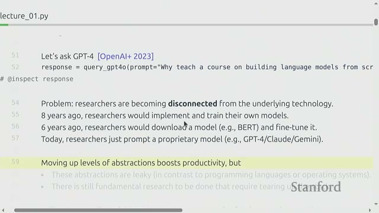
Why Build Language Models from Scratch?
In today's world, many researchers are becoming increasingly detached from the low-level details of model building. This detachment is largely due to the prevalence of prompting closed models, which can obscure the underlying mechanics of language models. In this segment, we explore the motivations behind teaching the construction of models from the ground up.
Key Motivations
Building models from scratch offers several significant benefits:
- Understanding Core Concepts: By implementing models yourself, you gain a deeper understanding of the fundamental ideas that drive machine learning.
- Engagement with Low-Level Details: Engaging with the intricacies of model architecture fosters a more comprehensive grasp of how language models operate.
- Support for Fundamental Research: Constructing models from the ground up allows for innovative research that can lead to new discoveries.
Definitions
- Prompting: Providing a prepared input string to a pre-built model to receive a response, without altering the model's weights.
- Abstraction: A simplified interface (such as string in, string out) that conceals the inner workings of a system.
Key Concepts
- While prompting and APIs enable widespread access to models, they often obscure critical engineering and scientific details.
- Some research requires a complete overhaul of the entire stack—data, systems, and models—allowing for co-design of components.
- Building models end-to-end equips researchers with insights into trade-offs that remain hidden when solely relying on closed models.
Important Notes
- Exclusively relying on prompting can mask significant failures and limitations of models.
- This course emphasizes the development of tools and intuition that underpin deep research, rather than merely teaching how to use APIs.
In conclusion, the journey of building language models from scratch not only enhances understanding but also fosters a culture of innovation and critical thinking in the field of machine learning.
3. Understanding the Limits of Industrial-Scale Models: Why Small-Scale Results Can Mislead
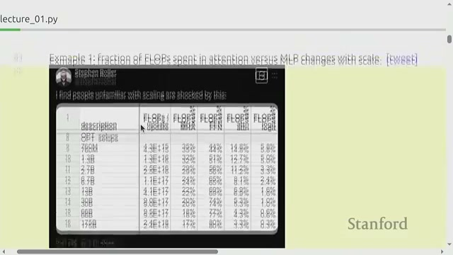
Limits of Industrial-Scale Models
This segment discusses the challenges associated with modern large models, which are often expensive and closed off from public scrutiny. It highlights how small models can yield misleading results, particularly in the context of scaling.
Key Insights
Here are two critical examples illustrating the limitations of small-scale models:
- Compute Allocation: The distribution of compute resources between attention and MLP (Multi-Layer Perceptron) layers varies significantly with scale. At smaller scales, these layers may have similar compute costs, but this changes dramatically as models grow larger.
- Emergent Behaviors: Certain capabilities, such as in-context learning, only manifest after reaching a substantial scale. Therefore, experiments conducted on small models may fail to capture these behaviors.
Definitions
- Parameter: A single numeric value in a model that is learned during training.
- FLOPs: Short for floating-point operations; a measure of compute work done while training or running models.
- Emergent Behavior: A capability or pattern that only appears after a model reaches a certain size or training scale.
Key Concepts
- Frontier Models: These very large models require enormous resources to train and are often not fully documented by their creators.
- Compute Cost Dynamics: At small scales, attention and MLP layers can have similar compute costs, but at larger scales, MLPs may dominate, altering which optimizations become significant.
- Scaling Effects: Some behaviors, like in-context learning, only emerge after sufficient scaling, meaning small experiments may overlook these critical aspects.
Important Notes
While it is possible to acquire many technical skills at a small scale, it is crucial to be cautious about the conclusions drawn regarding large-scale behavior. This course will cover both the mechanics and mindset necessary for understanding these models, but some intuitions about large-scale operations can only be partially grasped through small-scale experiments.
4. Understanding the Three Types of Knowledge in Our Class
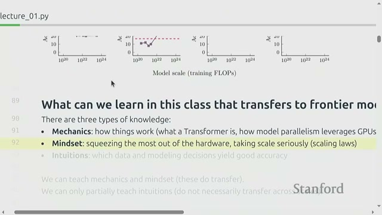
Summary
The instructors divide useful knowledge into three kinds: mechanics, mindset, and intuitions.
- Mechanics: Concrete building blocks (e.g., transformers, parallelism).
- Mindset: How to think about efficiency and scaling.
- Intuitions: Empirical rules about what data and modeling choices work, which are harder to teach fully.
Definitions
- Mechanics: Concrete technical skills and components (models, optimizers, systems) that you can implement and measure.
- Mindset: The way of thinking engineers and researchers use, such as focusing on efficiency and scaling trade-offs.
- Intuitions: Experience-based judgments about which datasets, architectures, or hyperparameters tend to work well.
Key Concepts
- Mechanics can be taught well: You will implement transformers and system components.
- Mindset emphasizes squeezing value from hardware and taking scaling seriously.
- Intuitions about what works at large scale are only partially teachable because scale can change which choices succeed.
Important Notes
The course will aim to give mechanics and mindset strongly, and partial exposure to large-scale intuitions.
Expect to learn practical efficiency-minded approaches, not just theoretical ideas.
5. The Bitter Lesson: Why Algorithmic Efficiency Matters

Understanding the Bitter Lesson
The concept of the bitter lesson highlights a crucial insight in the realm of computational efficiency: while scaling is important, the choice of algorithms and their efficiency is equally vital. As we scale operations, the cost of wasted compute becomes significantly high, making it imperative to focus on both algorithmic and operational efficiency.
Key Definitions
- Bitter lesson: This refers to the understanding that general methods utilizing more compute tend to scale better over time. However, the more accurate perspective is that algorithms at scale matter—combining efficient algorithms with scale yields the best results.
- Algorithmic efficiency: This term describes how effectively an algorithm utilizes compute resources and data to achieve high accuracy. Enhanced efficiency leads to significant resource savings.
Key Concepts
- Accuracy is influenced by both the compute resources allocated and the efficiency of the algorithms employed.
- Between 2012 and 2019, notable algorithmic improvements resulted in substantial speedups (e.g., up to 44x) in training times for various tasks, often surpassing the advancements made in hardware alone.
- At the frontier scale, where costs can reach hundreds of millions to billions, even minor inefficiencies can lead to significant financial losses.
Important Notes
- It is crucial not to misconstrue scaling as merely a matter of throwing money at a problem; enhancing algorithms and systems is essential for success.
- This course will place a strong emphasis on maximizing efficiency within the constraints of compute and data budgets.
6. Exploring the Evolution and Landscape of Language Models
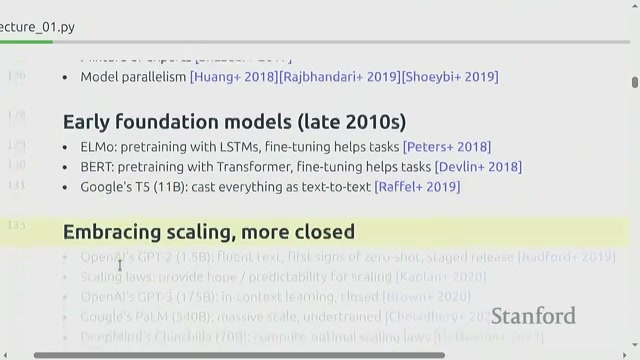
Summary
This section provides a brief history of language models and the recent rise of foundation and closed frontier models. It explains how past research has built many ingredients, such as attention, optimizers, and model parallelism, that have led to modern scaling and the split between closed and open models.
Definitions
- Language model: A model that assigns probabilities to sequences of text and can predict the next tokens.
- Foundation model: A large model trained on broad data that can be adapted to many downstream tasks (examples include ELMo, BERT, T5).
- Closed model: A model whose weights and training details are not publicly shared and may be available only via an API.
- Open weights model: A model where the learned weights are published for others to run and study.
Key Concepts
- Early large-scale language work included n-gram models trained on huge token counts; modern models differ significantly in architectures and capabilities.
- Key ingredients developed over the years include:
- Neural language models
- Sequence models (RNNs)
- Attention mechanisms
- Adam optimizer
- Efforts on model parallelism
- The community now has a mix of closed frontier models (large and private) and open-source efforts that publish weights and sometimes data.
Important Notes
- There are different levels of openness:
- Fully closed
- Open weights (no data)
- Fully open (weights + data + code)
- Learning to build models yourself helps fill gaps left by incomplete public documentation of large closed models.
7. Understanding Executable Lectures and Course Logistics in ML Systems
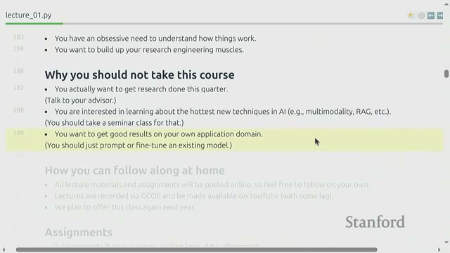
Summary
The instructor presents an executable lecture that integrates runnable code while explaining the course logistics, including:
- Assignments
- Workload
- Target Audience
This course is intensive, requiring students to build many components from scratch. It also offers unit tests and access to a cluster equipped with modern GPUs.
Definitions
- Executable lecture: A lecture format that allows code execution, displays environment states, and links to definitions during the teaching process.
- Unit tests: Automated checks that validate the correctness of individual parts of student code.
- H100: A state-of-the-art GPU (NVIDIA H100) utilized for extensive model training; students have access to a cluster featuring these GPUs.
Key Concepts
- The class is demanding: Expect five units of work with significant programming and systems tasks. One student likened the workload to that of multiple other classes combined.
- Assignments are built-from-scratch: Students receive minimal scaffolding and must implement components independently, though unit tests and adapters assist in validating their work.
- Cluster usage: Utilize the provided cluster for benchmarks, but prioritize local prototyping to conserve cluster time.
Important Notes
- This class is designed for students eager to gain a deep understanding of ML systems; it may not be suitable for those looking to quickly experiment with fine-tuning or conduct concurrent research.
- Start assignments early, as the cluster tends to be busy as deadlines approach. Be sure to read the cluster usage guide thoroughly.
- While AI coding tools can be beneficial, students must use them judiciously and take responsibility for their own learning, avoiding over-reliance on these tools.
8. Exploring Course Units: An In-Depth Look at the Basics Unit
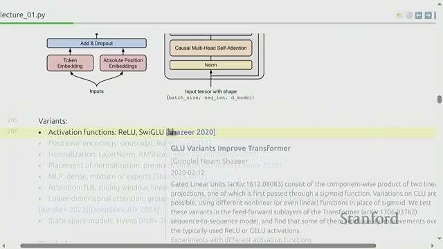
Course Units Overview
The instructor presents the five main course pillars:
- Basics
- Systems
- Scaling Laws
- Data
- Alignment
The Basics unit focuses on establishing a full pipeline that includes:
- Tokenizer
- Model Architecture (Transformer)
- Optimizer
- Training Loop
- Leaderboard to minimize perplexity
Definitions
- Tokenizer: A tool that converts text strings into sequences of integers (tokens) and back again.
- Transformer: A neural network architecture based on attention that is the backbone of modern language models.
- BPE (Byte Pair Encoding) Tokenizer: A tokenizer that learns token pieces from data by repeatedly merging common pairs of bytes or symbols.
- Optimizer (e.g., AdamW): An algorithm that updates model parameters during training to reduce loss.
- Perplexity: A common language model evaluation metric that measures how well a model predicts a sample; lower is better.
Key Concepts
The Basics unit covers:
- Tokenization (BPE)
- The original transformer architecture
- Cross-entropy loss
- An optimizer like AdamW
- Training loops in PyTorch
Additionally, it is important to note that:
- Many small architectural improvements (activation functions, positional embeddings, normalization choices) can significantly impact performance when combined.
- Assignments include implementing a BPE tokenizer and a transformer using limited allowed PyTorch primitives, as well as a timed H100 benchmarking task.
Important Notes
- The implementation of the tokenizer has surprised many students in past iterations — it can be more work than expected.
- You can prototype locally without large GPUs; only final benchmarks require cluster time.
- Small architecture changes and hyperparameter tuning can lead to large performance differences, so attention to detail is crucial.
9. Maximizing Hardware Efficiency: Understanding Kernels, Parallelism, and Inference
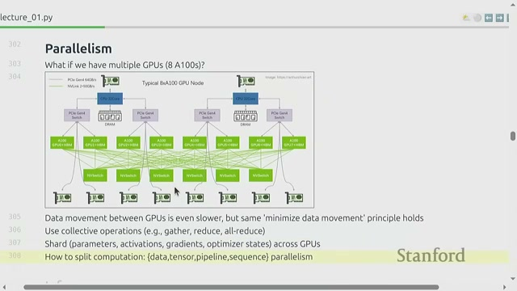
Summary
This unit covers how to get the most from hardware by focusing on:
- Writing efficient GPU kernels
- Utilizing parallelism across GPUs and nodes
- Optimizing inference (running models)
Students will:
- Write kernels using Triton
- Learn parallelism strategies
- Study inference phases and speedup tricks
Definitions
- GPU: A processor with many cores designed for parallel floating-point computations used in ML training and inference.
- Kernel: A small, performance-critical piece of code (often on GPU) that implements core operations like matrix multiply.
- Triton: A toolkit for writing custom GPU kernels more easily.
- Data parallelism: A method that splits input data across multiple workers, each holding a full copy of the model.
- Model (tensor) parallelism: A method that splits model parameters across multiple GPUs because the model is too large to fit on one device.
- Inference: Running a trained model to generate outputs (e.g., next tokens) from input prompts.
- Prefill: The inference stage where you process all tokens of the given prompt in parallel (same as training forward pass).
- Decode (autoregressive decoding): The phase that generates tokens one-by-one, where each new token depends on prior generated tokens.
- Speculative decoding: A technique that uses a cheaper model to generate several tokens ahead and then validates them with the main model to speed decoding.
Key Concepts
- GPUs have fast compute units on-chip and off-chip memory; moving data is often the main bottleneck.
- Kernels must minimize data movement (tiling, fusion) to fully utilize GPU compute.
- Multi-GPU training requires careful partitioning of parameters, activations, and gradients to reduce communication overhead (e.g., NVLink, switches).
- Inference consists of two parts: prefill (parallel-friendly) and decode (sequential and harder to parallelize); decode is often memory-bound and latency-sensitive.
Important Notes
- You will implement a GPU kernel and simple parallelism in assignment two; full-scale model parallelism (e.g., FSDP) is complicated to build from scratch.
- Always profile and benchmark to find real bottlenecks before optimizing.
- The inference cost globally can exceed training cost because inference repeats for every use of the model.
10. Understanding Scaling Laws and the Chinchilla Rule for Model Optimization
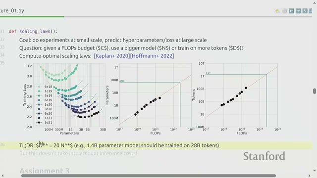
Summary
This unit teaches how to run small-scale experiments and fit scaling laws to predict model performance at larger compute budgets. The key question is how to trade off model size and data (tokens) given a fixed FLOPs budget; the Chinchilla rule provides a practical ratio.
Definitions
- FLOPs budget: The total amount of floating-point operations available for training; used as a compute budget measure.
- Scaling laws: Empirical relationships that show how model loss or accuracy changes with model size, data size, and compute.
- Chinchilla optimal (rule of thumb): A result that gives the best ratio of data tokens to model parameters for a given compute budget (roughly 20 tokens per parameter in the studied regime).
Key Concepts
- For a fixed compute budget, you must choose model size (parameters) and dataset size (tokens) — scaling laws show the optimal trade-off.
- Empirical studies reveal near-linear trends that allow for extrapolation and practical rules of thumb, such as the Chinchilla rule.
- In Assignment Three, students will utilize a simulated training API: they will run many small experiments, fit a scaling curve, and predict optimal hyperparameters for larger scales.
Important Notes
- Scaling law predictions ignore inference cost; they optimize training loss for a given compute budget only.
- The assignment enforces a simulated FLOPs budget to teach careful experiment selection and prioritization.
11. Mastering Data: Evaluation, Curation, Filtering, and Deduplication
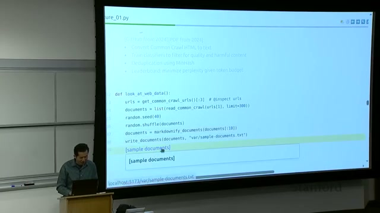
Summary
This section focuses on the critical role of data in determining the capabilities of a model. Key topics include:
- How to evaluate language models
- Methods for collecting and cleaning web data, specifically using Common Crawl
- Techniques for filtering and deduplication
- Legal and ethical considerations surrounding data usage
In Assignment Four, students will process raw crawl data to enhance its quality.
Definitions
- Common Crawl: A large public web crawl dataset containing raw HTML from numerous websites.
- Deduplication: The process of identifying and removing duplicate or near-duplicate text segments from a dataset.
- Filtering (in data curation): The removal of low-quality or harmful documents from raw crawled data using classifiers or heuristics.
- Evaluation metrics: Standard tests and scores, such as perplexity and MMLU, used to measure model quality in language prediction or tasks.
Key Concepts
- The web contains a significant amount of low-quality or spam content; thus, raw crawls must be cleaned and transformed (from HTML to text) before they can be utilized.
- Filtering and deduplication are essential for improving data quality and preventing unnecessary computational waste on irrelevant or leaked test data.
- Evaluation should encompass both next-token metrics (like perplexity) and task-based benchmarks (such as MMLU), potentially incorporating test-time techniques like chain-of-thought.
Important Notes
- Data must be actively acquired and processed; it does not simply "come from the internet" in a ready-to-use format.
- Legal constraints and licensing issues can restrict the use of certain data; practitioners often opt to purchase curated datasets for advanced models.
- In Assignment Four, students will receive raw Common Crawl data and are tasked with building filters and deduplication pipelines, followed by optimizing perplexity under a token budget.
12. Mastering Alignment: Supervised Fine-Tuning and Learning from Feedback
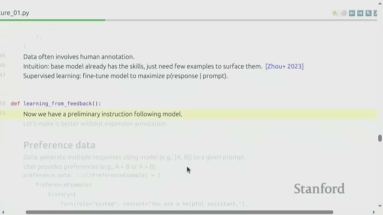
Summary
This unit explains how to turn a base next-token model into a useful assistant through alignment. There are two main phases:
- Supervised Fine-Tuning (SFT) on prompt-response pairs
- Learning from Feedback (preference data, verifiers) using simpler or full reinforcement learning methods to improve behavior, safety, and instruction following.
Definitions
- Base model: A model trained to predict next tokens (raw language model) before any instruction tuning or alignment.
- Alignment: The process of adjusting a base model so it follows instructions, adopts desired style, and refuses harmful outputs.
- Supervised Fine-Tuning (SFT): Training the model on example prompt-response pairs so it learns to produce desirable outputs.
- Preference data: Data where humans (or other systems) indicate which of two model outputs they prefer for a given prompt.
- Verifier: A mechanism (could be learned) that judges whether a model response is correct or good for a given domain (useful for math or code evaluation).
- PPO (Proximal Policy Optimization): A reinforcement learning algorithm commonly used to optimize models with reward signals.
- DPO (Direct Preference Optimization): A simpler algorithm for learning from pairwise preference data without a full RL setup.
- GRPO (Grouped Relative Preference Optimization): A variant that simplifies RL by removing the value function and was developed for efficiency in alignment.
Key Concepts
- SFT is often enough to give instruction-following from a good base model; small curated datasets can be powerful.
- Preference learning uses A/B comparisons to teach models what users like without full reward labeling.
- For domains with concrete verifiers (math, code), a verifier can provide strong supervision; otherwise, RL methods like PPO, DPO, or GRPO are used.
- Assignment five asks students to implement SFT and RL-from-feedback algorithms (DPO and GRPO) and evaluate results.
Important Notes
- Gathering high-quality SFT data is expensive; preference data and verifiers are ways to use cheaper supervision.
- Choosing the right learning method depends on the type of feedback available (pairwise preferences vs scalar rewards vs verifiers).
13. Understanding Efficiency in Resource Regimes: A Course Recap
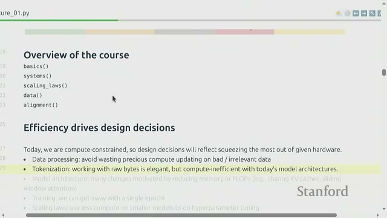
Course Recap: Efficiency as the Driving Principle
The instructor recaps that efficiency — getting the best model for a given compute and data budget — is the central idea throughout the course. Design decisions, including data processing, tokenization, architectures, and training regimes, depend on whether you are compute-poor or data-poor. This course particularly focuses on the compute-constrained regime.
Definitions
- Efficiency (in this course): Maximizing model quality (accuracy, loss) per unit of compute and data.
- Compute-constrained regime: A situation where compute is the scarce resource and data is relatively abundant.
Key Concepts
When operating in a compute-constrained environment, consider the following strategies:
- Filter data aggressively to make the most of limited compute resources.
- Utilize tokenization to enhance compute efficiency.
- Prefer training recipes that expose more unique data quickly, such as single epoch passes.
If you find yourself in a data-constrained regime, different strategies may become optimal, such as:
- Conducting more epochs.
- Changing architectures to better suit the available data.
Important Notes
Throughout the course, it is assumed that students are mostly GPU-poor (compute-limited), and the teachings focus on making the most out of limited hardware. Remember:
- Design choices that are effective in one regime may be suboptimal in another.
- Always consider the resource regime when designing experiments.
14. Understanding Tokenization: Definitions, Roles, and Motivations
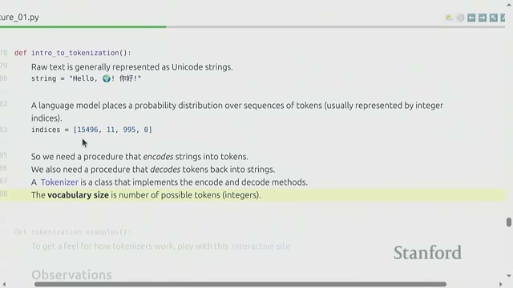
Introduction to Tokenization
Tokenization is a crucial process in natural language processing that transforms raw Unicode strings into sequences of integer token IDs, which models can efficiently utilize. The choice of tokenizer significantly impacts both the sequence length and the overall efficiency of the model.
Key Definitions
- Tokenizer: A tool that converts between text strings and sequences of integers (tokens) that a model can process.
- Token: An integer code representing a piece of text, which can be a character, byte, or subword piece.
- Vocabulary Size: The total number of distinct tokens that the tokenizer can output.
Key Concepts
- Reversibility: Tokenizers must be reversible, meaning that encoding and decoding should reliably recover the original text.
- Bytes per Token: Each token represents a certain number of bytes, and the average bytes-per-token (compression ratio) affects both sequence length and computational efficiency.
Important Notes
- Tokenization design involves essential efficiency trade-offs; shorter token sequences can help reduce attention compute costs.
- In practice, tokenizers often follow a convention where spaces are included as part of tokens. For example, a space followed by a word is treated differently than the word alone.
Understanding these aspects of tokenization is vital for optimizing model performance and ensuring effective natural language processing.
15. Understanding Tokenizers and Compression Ratios in NLP
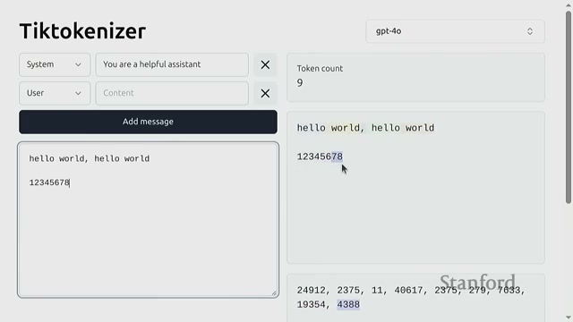
Examples of Tokenizers and Compression Ratio
In this lecture segment, we explore how existing tokenizers, such as the GPT-2 tokenizer, function in the realm of natural language processing (NLP). The instructor demonstrates how these tokenizers split strings and highlights the bytes-per-token compression ratio, which is approximately 1.6 for GPT tokenization.
Students are encouraged to experiment with various tokenizers to gain insight into how common strings are segmented into tokens.
Definitions
- Compression ratio (bytes per token): The average number of bytes represented by one token; a higher ratio indicates more compression, resulting in shorter token sequences.
Key Concepts
- Tokenizers often treat whitespace as part of tokens and may split common words into single tokens when it is beneficial for processing.
- Numeric strings and other unusual text may be split into multiple tokens; this behavior reflects the statistics of the corpus used for training.
Important Notes
- Engaging with tokenizers interactively helps to build intuition about how text maps to token IDs.
- The bytes-per-token statistic is a valuable metric when considering model sequence lengths and computational requirements.
16. Exploring Tokenization: Character, Byte, and Word Approaches
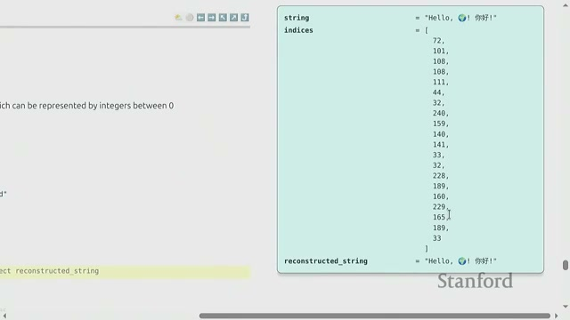
Summary
This section compares three simple tokenization methods: character-based, byte-based, and word-based. Each method has its own trade-offs:
- Character-based tokenization can waste vocabulary slots.
- Byte-based tokenization provides a consistent small vocabulary but results in long sequences.
- Word-based tokenization adapts well to common language use but can lead to an unbounded vocabulary and issues with out-of-vocabulary words.
Definitions
- Character-based tokenization: Each Unicode character maps to a token (code point).
- Byte-based tokenization: Text is encoded as raw bytes (e.g., UTF-8 bytes), with each byte treated as a token (vocabulary size up to 256).
- Word-based tokenization: Text is split into words or segments by spaces or regular expressions, treating each segment as a token.
Key Concepts
- Character-based: Produces a small average token length but results in a very sparse vocabulary, leading to inefficient use of vocabulary slots.
- Byte-based: Offers a fixed small vocabulary (0–255) and is robust to any input, but generates long sequences, which increases attention computation costs.
- Word-based: Provides adaptive tokenization (short tokens for common words) but faces challenges with an unlimited vocabulary and issues with rare or new words.
Important Notes
- Long token sequences from byte-based tokenization are costly because attention computation grows with sequence length.
- Word-based systems encounter practical challenges such as handling unknown words and must carefully manage out-of-vocabulary tokens.
17. Understanding Byte Pair Encoding (BPE) Tokenizer: Algorithm and Demonstration
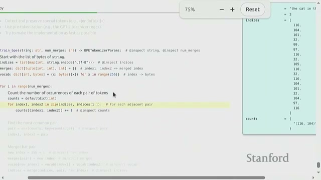
Summary
The Byte Pair Encoding (BPE) tokenizer is an effective algorithm used for compressing sequences of data. The process begins with bytes, where the algorithm counts common adjacent pairs, merges the most frequent pair into a new token, and repeats this process. To illustrate this, the instructor walks through a small example using the words "cat" and "hat" to demonstrate how repeated merges can compress common subsequences into tokens.
Definitions
- Byte Pair Encoding (BPE): A simple iterative algorithm that builds a tokenizer by repeatedly merging the most frequent adjacent pair of symbols (initially bytes) into a new token.
- Merge table: A record of which symbol pairs have been merged and what new token they map to.
Key Concepts
- BPE learns token pieces from data, allocating vocabulary capacity to frequent byte sequences so that common chunks become single tokens.
- The algorithm reduces sequence length as new tokens represent longer sequences of bytes, improving compression and efficiency.
- Practical BPE implementations pre-tokenize text (e.g., by word-like splits) for efficiency and add special tokens and faster encoding implementations.
Important Notes
- A naive BPE implementation can be slow if it loops inefficiently over all merges; practical implementations optimize encode/decode processes.
- Real tokenizers add pre-tokenization steps and special tokens; students will implement a performant BPE variant in the upcoming assignment.
18. Understanding Tokenization: Key Insights and Future Directions
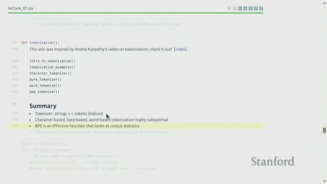
Tokenization Summary
In this lecture, we explored the concept of tokenization, which is the process of mapping text to integer sequences. The instructor highlighted that:
- Byte Pair Encoding (BPE) is the practical and widely used approach for tokenization today.
- Tokenization remains essential until byte-level models can operate efficiently at frontier scales.
Looking ahead, the next lecture will delve into PyTorch primitives and the importance of resource accounting.
Definitions
- Tokenization: The process of turning Unicode text into tokens (integers) that models can utilize.
Key Concepts
- BPE is an effective, data-driven, and historically significant algorithm that remains commonly used for tokenization.
- Choices made during tokenization significantly impact compute efficiency, making them a crucial engineering decision.
Important Notes
- While byte-level models are elegant, current architectures still make tokenization a vital lever for efficiency.
- In the next lecture, we will cover detailed PyTorch building blocks and focus on careful counting of FLOPs and memory usage.
Generated automatically from lecture transcript and video analysis.